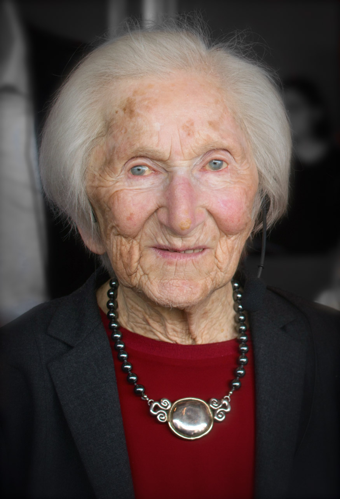

Skriv ditt svar på miniwhiteboarden — du har 30 sekunder per fråga.

Född 1924 i Sighet — en multietnisk stad i Transsylvanien, då en del av Rumänien.
Det är en vanlig tonårings vardag — i en europeisk stad, mellan två krig.
Sju år senare är hon i Auschwitz.
Hennes föräldrar mördades.
Hon och Livi överlevde — tillsammans.
Sighet (Sighetu Marmației) ligger i Transsylvanien — då en del av Rumänien. [VERIFIERA: Sighet annekteras av Ungern först 1940.]
I Sighet är livet 1933 i stort sett detsamma som året innan. Hédi är 9 år.
Det är i Tyskland något börjar förändras — först långsamt, sedan snabbt.
Hat eller fientlighet riktad specifikt mot judar — som grupp, oavsett vad enskilda judar gör eller tror.
Riktas mot människor på grund av att de är judar — inte vad de gör.
Rötter i Europa går århundraden bakåt — moderniseras under 1800-talet.
En lögn om att människor kan delas in i "raser" med olika värde — och att den egna "rasen" är överlägsen.
Nazisterna hävdade att det fanns en "arisk ras" och att judar var en "underordnad ras". Det var pseudovetenskap — men staten satte den i politiken.
Tanken att samhället kan "förbättras" genom att kontrollera vilka som får skaffa barn — i värsta fall genom tvångssterilisering eller mord.
T4-programmet [VERIFIERA: 1939] mördade tiotusentals tyska medborgare med funktionsnedsättning. Det var generalrepetitionen för folkmordet på judarna.
I januari 1933 utses Hitler till rikskansler.
Inom månader avskaffas demokratin: yttrandefrihet, partier, fackföreningar.
I Sighet märks ingenting. Hédi är 9 år.
Två lagar antas i september 1935: Reichsbürgergesetz och lagen för skydd av tyskt blod och tysk ära.
Tyskland annekterar Österrike. Antijudiska lagar utvidgas över natten till Wien.
Statsorganiserade pogromer i hela Tyskland och Österrike. Synagogor brinner.
Cirka 30 000 judiska män skickas till koncentrationsläger. [VERIFIERA siffran]
Frågan står då: stanna eller fly?
Stöd: exempelmening på blädderbladet · Utmaning ▪ hitta en händelse som är alla tre begreppen samtidigt.
Förklara med egna ord vad antisemitism är. Ge ett exempel från Tyskland 1933–1938.
1939 bryter kriget ut. Hédi blir tonåring. Vi följer henne när lagarna gradvis kryper närmare hennes vardag — också i Ungern, dit Sighet snart hör.